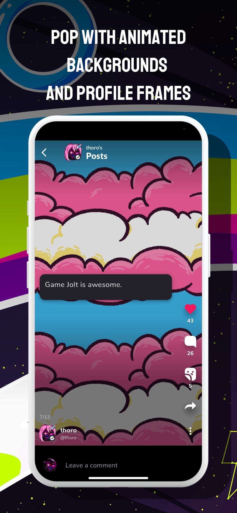

把 GameJolt 装进手机：安卓端从装包到逛商店的完整实操
这篇教程带你从零走完 GameJolt 安卓端的安装、账号注册、资料卡装修和商店逛圈四步，看完就能把应用装进手机、看懂游戏页、找准想玩的作品。
GameJolt 是一个独立游戏社区和商店，官网每天有几千款小游戏上架，从恐怖解谜到周五夜放克（FNF）mod 应有尽有。这篇教程结束时，你能把 GameJolt 安卓端装上手机、注册好账号、把资料卡装修得像个样子，还能进商店读懂游戏页的每一块信息，不会踩 WIP 坑。
准备：装之前备好三样
动手前花一分钟确认好，省得装到一半卡壳。
第一，安装包。通过下载拿到 APK 文件，大小约 30MB，建议下载后核对一下 MD5，避免下载不完整导致解析包报错。如果你是从网盘转存过来的，下载完成后顺手验一下最稳。
第二，手机剩余空间。安装包本身不大，但安装时系统需要解压写入数据，应用跑起来还会缓存图片和视频，建议留出至少两百兆的余量，别让系统空间告急。
第三，网络。GameJolt 需要联网使用，首次启动会加载资源和商店内容，最好在 Wi-Fi 环境下走完整流程，移动网络也行但要注意流量。
第一步：下载安装 + 未知来源授权
这一步最费时间的是安卓的「允许安装未知来源应用」机制，不同品牌的路径略有差别，耐心跟着提示找就行。
- 点开下载完成的 APK 文件。首次安装时，系统大概率会弹出「不允许安装未知来源应用」的提示——别慌，这是安卓的安全机制，不是你的安装包有问题。
- 按弹窗提示跳转到授权页面。常见路径是「设置 → 安全 → 安装未知应用」或「设置 → 应用管理 → 特殊应用权限」，找到你用来下载的那个浏览器或文件管理器，单独给它打开「允许安装应用」的开关。小米、OPPO、vivo、华为的系统路径大同小异，核心都是找到「特殊应用权限」下面的未知来源开关。
- 回到文件管理器重新点击安装，进度条走完就成了。
- 装完先打开一次，能进到启动界面或登录界面就算成功，别急着跳过，先看看首屏加载有没有异常。
两个最常见的拦路虎先说在前面：如果提示「解析包出错」，基本就是下载不完整，回网盘重下再验一次 MD5；如果提示「与应用冲突」，说明手机上装过其他来源的同名应用，先卸载旧的再装。
第二步：注册账号，别把用户名和显示名搞混
打开应用点「注册」，邮箱验证通过之后，系统会让你填两个名字——这一步很多人直接随便填，后面想改才发现有门道。
用户名（username） 和 显示名（display name） 是两回事。用户名是字母、数字、连字符、下划线的组合，全站唯一、所有人都能看到，虽然允许修改但建议一开始就想好；显示名是对外展示的昵称，可以更花哨，改起来也随意。
实操建议：用户名用你在其他社区惯用的 ID，保持跨平台一致，方便同好认出你；显示名可以带表情、符号甚至中文，想叫什么就叫什么。别用生僻字符组合当用户名，输起来自己都烦。
第三步：把资料卡装修一下，五分钟搞定
注册完默认资料卡是空的，花五分钟装一下，之后别人来你主页留言、看你的关注和点赞记录，第一眼就是这张卡。
从上到下能动的地方：头像（自定义图片）、头像框（从商店或活动获得）、背景图、动画背景（付费装扮类目，效果是主页背景会动）、个人简介（一句话说清你发什么内容、混什么圈子）。头像框、背景这些装扮类商品，不少创作者会把自己画的贴纸和边框上架，给自己喜欢的创作者捧场顺便装修主页，一举两得。装扮获取的完整清单和活动规则可以去gamejolt文档翻一下，省得在商店里瞎逛。

顺手把留言板（Shouts）的开关也确认一下——默认是开着的，陌生人可以在你主页留言。不想被刷屏就关掉，或者改成仅好友可留言。这个设置在「隐私开关」里面，后面想改随时改。
第四步：进商店逛一圈，读懂游戏页的每一块
装好了、账号有了、资料卡也弄了，是时候进商店找游戏玩了。别看到标题就点进去——先学会读游戏页，避免踩 WIP 坑。
一个完整的游戏页，从上到下你能读到这些关键信息：
头图和缩略图：列表卡片里看到的那张图，悬停有动效说明开发者用了心。标签：游戏类型标记，比如 #horror、#fnf，一眼判断对不对你的胃口。开发阶段：这是最重要的信号——WIP 表示制作中，内容可能只有一两个关卡；Complete 表示完成；Canceled 表示终止但页面还能访问。标着 WIP 且没有任何可玩构建的页面，大概率要蹲很久才有内容。
版本/发布历史：各版本的更新说明，翻最近一两个版本的发布时间和更新内容，就能判断这个项目还在不在活跃更新。音乐播放器：开发者上传的原声试听，有原声说明完成度不错。评论和评分：别只看总评分，翻最近的几条评论，看看更新之后大家的真实反馈——老作品的评分可能是刚发布时刷的，参考价值不大。
三个实操判断技巧：
- 看到 WIP 先别急着点进去，如果页面上没有任何可玩的构建文件，先蹲两周再看；
- 版本历史里最近一次更新超过半年的，大概率是半弃坑状态，谨慎投入时间；
- 没有评论区不一定是差评多——开发者可以自己关闭评论和评分，这是平台给的设置项。
常见卡点与解法
这里把新手最容易翻车的三个地方提前说一下，遇到了直接对照解决。
卡点一：找不到「允许安装未知来源」开关。每个品牌系统路径不同，快速办法是打开设置顶部的搜索框，搜「未知」或「特殊应用权限」，大部分系统能直接定位到那个开关。
卡点二：下载了但安装包打不开。先确认你用的是安卓设备且系统版本够新，GameJolt 要求的最低版本不高但太老的设备可能装不了；其次检查文件扩展名是不是 .apk，有时候浏览器下载完会变成 .bin 或 .zip，手动改名就行。
卡点三：进商店看到一堆 WIP 作品，不知道选哪个。先用标签筛选类型，再按「最近更新」排序，去掉 WIP 标，剩下的就是活跃项目。也可以关注几个你喜欢的开发者，蹲更新通知最省心。
进阶：往下还能玩什么
逛了几天之后，可以试试进商店换个动画背景和头像框装扮一下主页，或者去翻一下「成就」板块——接了 Game API 的游戏页会有奖杯和分数，玩得多能攒不少。如果玩得好，还能给喜欢的游戏写评论、加评分，跟开发者互动，社区氛围整体挺友好的。这套资料我在三个仓库都同步了方便不同网络环境下自取——GitHub是主力维护、Gitee给国内加速访问、GitCode是额外备份，怕丢存一份就行。